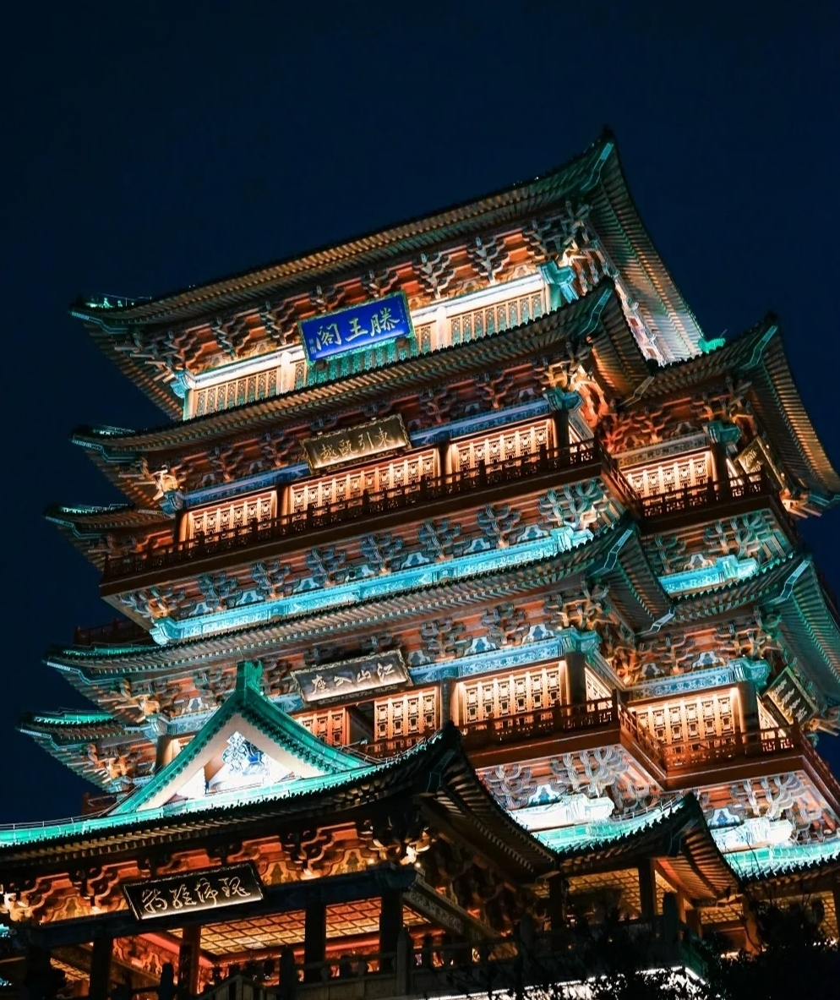

| Nan Chang-The City with glories and beauties
The history of the capital of Jiangxi is over 2,200 years old. During the rule of the Qin dynasty, Nanchang first became a part of the Chinese Empire after the indigenous Baiyue peoples were defeated by the forces of the Chinese Empire. Nanchang received its current name in 201 BC when the Han dynasty ruled in China. It then served as the Yuzhang Commandery’s administrative seat. In the centuries that followed, Nanchang grew rapidly to emerge as one of the most important cities of the country. At the turn of the 19th century, Nanchang witnessed several insurrections organized by the communist. During the Nanchang Uprising, the city came under Communist control for a few days. Several important World War II events also involved the city like the Battle of Nanchang. When the People’s Republic of China was formed in 1949, Nanchang was still a primarily old-style city with little industry and an economy heavily dependent on agriculture. It was made the capital of Jiangxi and since then, developed rapidly as an industrial city. |
 |